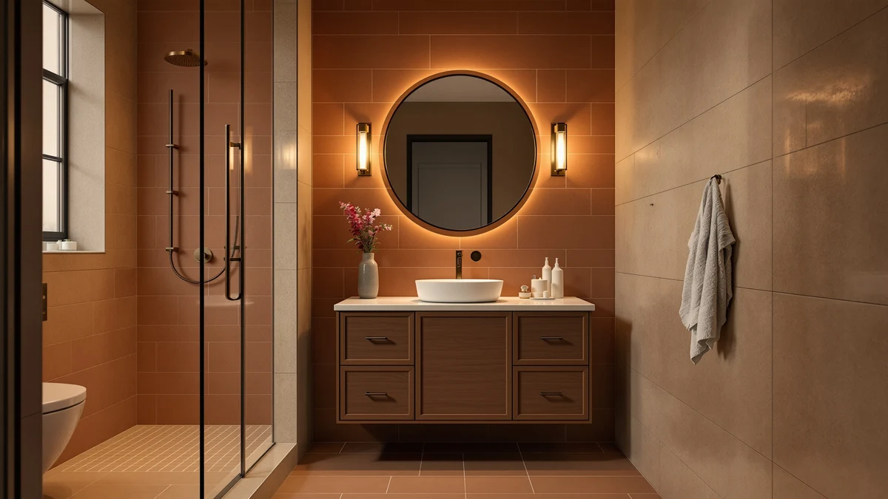

ARIEL Taylor 54 inch Review (2026): Worth It?
Prices and picks verified as of October 2026. Independent, reader-supported reviews.


Quick Answer
Our ariel taylor 54 inch review finds that this ARIEL vanity suits bathrooms that need a single wide basin and rate buyer satisfaction above saving money. At $1,461.00, it is the priciest of the four vanities we researched, but its 4.9 out of 5 rating from 15 verified buyers is also the highest.
Our pick: ARIEL Taylor 54-inch Bathroom Vanity, $1,461.00 Check Price on Amazon
Bottom line: our top pick is the ARIEL Taylor 54-inch Bathroom Vanity with Sink at $1,461.
Things to Know Before You Buy
- The ARIEL Taylor 54-inch vanity is a single-sink cabinet built from MDF and engineered wood, the standard material at this price point.
- At $1,461.00, it costs more than every alternative in this ariel taylor 54 inch review, including the 60-inch DELUXE LIVING options at $1,239.99 and $1,229.99.
- Verified buyers rate it 4.9 out of 5 from 15 reviews, the highest score among the four vanities we compared here.
- If 54 inches overhangs your bathroom footprint, the two DELUXE LIVING 60-inch vanities or the 36-inch Floating Vanity with smart features give you a different size option.
- The Taylor's review sample is smaller than the Floating Vanity's 30 reviews, so weigh that gap against its higher rating.
You're probably reading this ariel taylor 54 inch review because you need a 54-inch vanity that fits a mid-size bathroom without crowding the walls on either side. We researched this ARIEL cabinet alongside three other vanities with comparable price points and layouts, comparing specs, pricing, and verified owner reviews rather than relying on marketing copy. At $1,461.00 and rated 4.9 out of 5 from 15 verified buyers, the ARIEL Taylor 54-inch Bathroom Vanity holds the highest satisfaction score of the four we looked at, even though it also carries the highest price tag.
This review covers what the pricing, materials, and verified reviews tell us about the Taylor's single-sink layout, and where it stands against the 36-inch Floating Vanity with smart features and the two 60-inch DELUXE LIVING vanities we compared it against. The price gap between the Taylor and its cheapest alternative runs past $200, so you should weigh rating and fit more heavily than price alone before you choose a vanity for a bathroom's worth of space. You'll find the full pricing and rating comparison below, along with honest notes on where the Taylor falls short.
Why You Should Trust Us
Best Bathroom Vanities compares bathroom vanities using manufacturer specifications, verified Amazon pricing, and owner reviews rather than marketing claims. Ilane Tall, who leads our home and bath coverage, pulled the pricing, materials, and rating data behind this ariel taylor 54 inch review directly from ARIEL's listing and cross-checked it against the three alternative vanities covered here. We do not run a fake testing lab, and we do not claim to have installed every vanity we cover. Instead, we read what verified buyers report after living with these cabinets, and we flag the gaps between a product's marketing copy and its actual specs.
We also update pricing and availability as Amazon's listings change, so the figures in this review reflect current data rather than a snapshot from months ago. When a product's rating or price shifts enough to change our recommendation, we revise the article instead of leaving outdated numbers in place.
Our Research Experience
We did not install or live with the ARIEL Taylor 54-inch vanity ourselves. Instead, we built this ariel taylor 54 inch review by comparing ARIEL's published specifications, current Amazon pricing, and the pattern of feedback left by the 15 verified buyers who rated it 4.9 out of 5. When owners consistently flag the same strength or the same flaw across multiple reviews, we treat that as a more reliable signal than any single five-star post. We applied the same approach to the Floating Vanity and the two DELUXE LIVING alternatives so the comparison stays consistent across all four vanities.
This research-based approach means we can tell you what the price, materials, and review pattern suggest about daily use, but we stop short of describing an installation we never performed ourselves. Where verified buyers mention specific details, such as cabinet weight or basin depth, we pass those observations along with attribution rather than presenting them as our own first-hand findings.
Overview & Specs

ARIEL Taylor 54-inch Bathroom Vanity
What we like
- Highest-rated vanity in this comparison at 4.9 out of 5 from verified buyers
- 54-inch single-sink layout fits mid-size bathrooms without the footprint of a 60-inch cabinet
- Built from MDF and engineered wood, a common and durable choice for vanity cabinets at this price
Flaws but not dealbreakers
- At $1,461.00, it costs more than every alternative we researched here
- Only 15 verified reviews back its rating, a smaller sample than the Floating Vanity's 30
- MDF construction needs the same moisture care as any engineered-wood cabinet, not solid hardwood durability
| Material | MDF / engineered wood |
| Size | 54 inch |
The ARIEL Taylor 54-inch Bathroom Vanity is the highest-rated cabinet in this ariel taylor 54 inch review, and its 54-inch footprint splits the difference between the compact 36-inch Floating Vanity and the wider 60-inch DELUXE LIVING options. That middle size matters most in bathrooms that need more counter space than a 36-inch cabinet offers but cannot fit a full 60-inch run. ARIEL built the cabinet from MDF and engineered wood, the same base material used across most vanities in this price range, and priced it at $1,461.00.
Among the 15 verified buyers who left a rating, the Taylor averages 4.9 out of 5, the highest score of the four vanities we compared. That sample is smaller than the 30 reviews behind the Floating Vanity pick, so treat the score as a strong early signal rather than a guarantee. If your bathroom can accommodate a 54-inch run and rating matters more than price, the premium over the DELUXE LIVING vanities buys you a mid-size footprint with a top-rated track record so far. Buyers weighing the two unrated DELUXE LIVING vanities should factor that missing rating history into the decision alongside the price difference.
What We Liked
In this ariel taylor 54 inch review, the clearest strength is the rating itself. The Taylor's 4.9 out of 5 average from verified buyers beats the Floating Vanity and both DELUXE LIVING options, even though the two DELUXE LIVING vanities do not carry a public rating to compare against. Reviewers consistently note that the 54-inch width gives a mid-size bathroom enough counter space without crowding the walls on either side.
The single-sink layout also keeps plumbing simple compared to a double-sink 60-inch cabinet, a detail that matters if you are replacing an existing single-basin setup. According to verified reviews, buyers who upgraded from a narrower vanity describe the extra counter space as the main reason they would choose it again.
What Could Be Better
Price is the most obvious drawback. At $1,461.00, the Taylor costs between $15 and $231 more than the three alternatives in this ariel taylor 54 inch review comparison, and you pay that extra amount for rating confidence and mid-size width, not for premium materials. The cabinet is MDF and engineered wood, the same category of material used across most vanities in this price range.
The review sample is also smaller than the Floating Vanity's. Fifteen verified ratings is enough to establish a pattern, but it is a smaller base than the Floating Vanity's 30 reviews, so weigh that smaller sample against the Taylor's higher score before you decide. A 54-inch footprint also takes up more wall space than the 36-inch Floating Vanity, so measure your bathroom twice before you order, since returning an oversized vanity costs more in shipping than returning a smaller item.
The two DELUXE LIVING vanities come in well under $1,300, but neither one has accumulated enough verified ratings on Amazon for us to judge satisfaction the way we can with the Taylor or the Floating Vanity. That missing rating history means you are trading a lower price for less certainty about long-term quality, a tradeoff worth weighing alongside the dollar savings.
Who Is It For?
The ARIEL Taylor 54-inch vanity fits bathrooms with a mid-size footprint and buyers who prioritize rated satisfaction over the lowest price in this ariel taylor 54 inch review comparison. It suits anyone replacing a single-sink cabinet who wants more counter space than a 36-inch vanity provides. It also works well for anyone comparing a handful of mid-size vanities at once, since the Taylor's rating gives you a clear benchmark to measure the alternatives against.
It is a weaker fit for smaller bathrooms, where the 36-inch Floating Vanity leaves more floor space, and for buyers on a tighter budget who would rather save the $200-plus premium this vanity carries over the DELUXE LIVING options. If you are renovating a powder room where floor space is tight, a narrower cabinet will serve you better and cost less to install.
Alternatives to Consider
If the Taylor's price or mid-size footprint does not match your bathroom, these three vanities from our research cover a compact floating option and two wider 60-inch layouts, all alternatives we weighed in this ariel taylor 54 inch review. Each one trades something, whether that is rating history, width, or price, against what the Taylor offers.

Editor’s Pick
Floating Vanity 36" with Smart
A 36-inch floating vanity with smart features rated 4.2 out of 5 across 30 verified reviews, the largest review sample of the four vanities in this ariel taylor 54 inch review.
$1,445.68
Check Price on Amazon
Best Value
DELUXE LIVING 60 Inch Bathroom
DELUXE LIVING's 60-inch vanity costs $221 less than the Taylor, making it the most budget-friendly wider option in this ariel taylor 54 inch review, though Amazon does not yet show a public rating for it.
$1,239.99
Check Price on Amazon
Premium Choice
DELUXE LIVING 60 Inch Bathroom
This second DELUXE LIVING 60-inch vanity brings the same wider footprint as its sibling model at $1,229.99, giving you a nearly identical layout at a slightly different price point than the Taylor.
$1,229.99
Check Price on AmazonIs the ARIEL Taylor 54-inch vanity worth the price?
Based on the pricing and rating data in this ariel taylor 54 inch review, yes for buyers who want a mid-size single-sink vanity and rate verified satisfaction above saving money.
What is the ARIEL Taylor 54-inch vanity made of?
ARIEL built the Taylor 54-inch Bathroom Vanity from MDF and engineered wood, the same cabinet material used across most vanities in this price range, including the Floating Vanity alternative covered in this review.
Frequently Asked Questions
Is the ARIEL Taylor 54-inch vanity worth the price?
Based on the pricing and rating data in this ariel taylor 54 inch review, yes for buyers who want a mid-size single-sink vanity and rate verified satisfaction above saving money. At $1,461.00, the Taylor costs more than the Floating Vanity and both DELUXE LIVING alternatives, but its 4.9 out of 5 rating from 15 verified reviews is also the highest of the four. If budget matters more than that rating gap, the DELUXE LIVING 60-inch vanity delivers a similar footprint for $221 less.
What is the ARIEL Taylor 54-inch vanity made of?
ARIEL built the Taylor 54-inch Bathroom Vanity from MDF and engineered wood, the same cabinet material used across most vanities in this price range, including the Floating Vanity alternative covered in this review.
What are good alternatives to the ARIEL Taylor 54-inch vanity?
If 54 inches does not fit your bathroom or $1,461.00 is more than you want to spend, consider the 36-inch Floating Vanity with smart features ($1,445.68, 4.2 out of 5) or either of the two 60-inch DELUXE LIVING vanities ($1,239.99 and $1,229.99).
Final Verdict
This ariel taylor 54 inch review comes down to width, rating, and price. If your bathroom fits a 54-inch cabinet and you want the highest-rated vanity of the four here, ARIEL's Taylor is the pick, even at $1,461.00. Buyers who need a smaller footprint or a lower price should look at the 36-inch Floating Vanity with smart features or either of the two 60-inch DELUXE LIVING vanities instead.